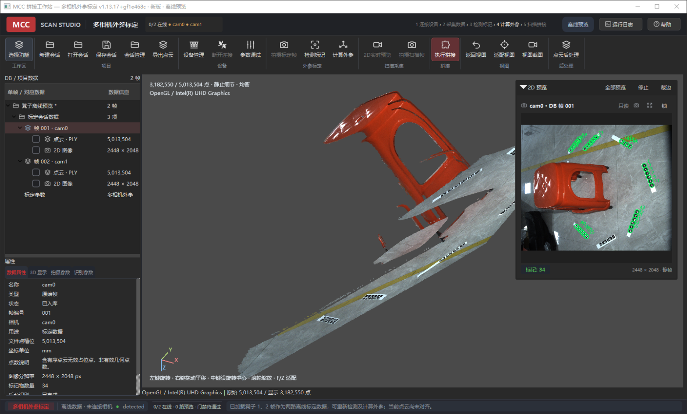
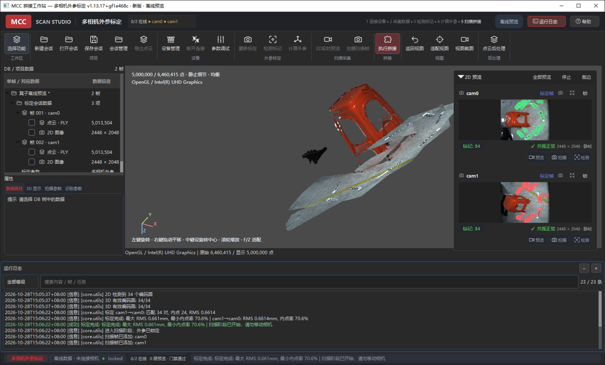
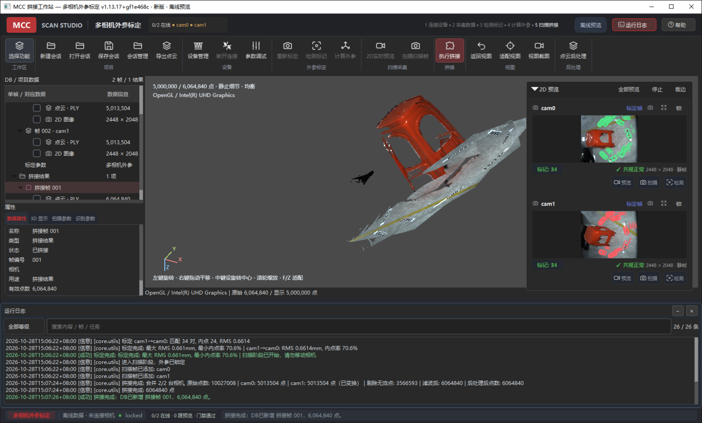
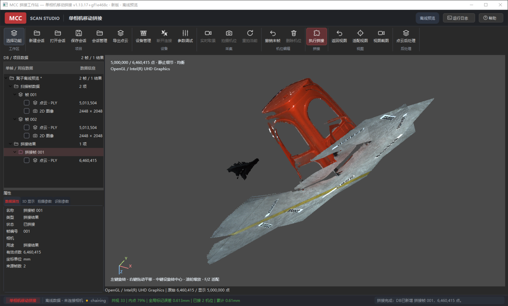
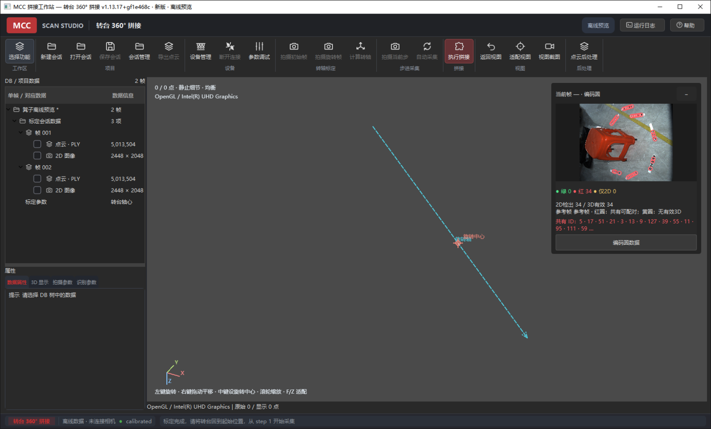
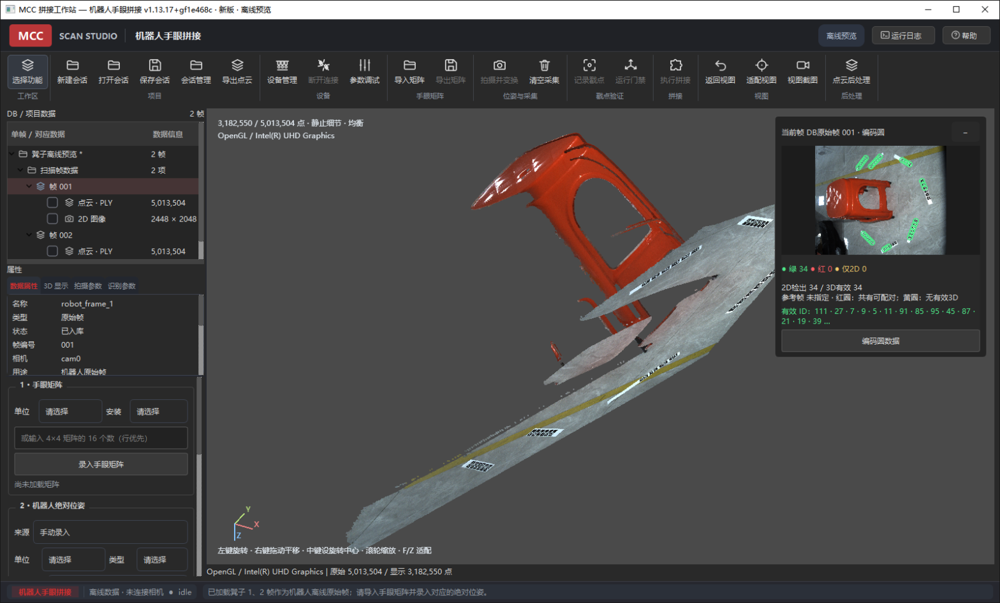
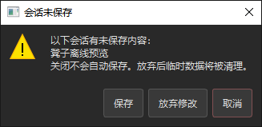

F1 · 高优先级 / 数据安全
崩溃恢复与会话检查点
利用私有临时工作区定期保存轻量检查点；异常重启后提供“恢复 / 放弃”选择。只有用户显式保存才更新正式 sessions/，不恢复后台外参自动保存。
验收：模拟进程被杀后可恢复原始帧、识别状态、外参和结果来源；正式快照不被静默改写。
用于开发、测试与交付之间统一交接当前软件基线、验证证据、遗留问题和发布门槛。报告基于真实 Windows 界面操作、离线数据、自动回归和代码审查形成，不包含产品代码修改。
Handoff control / 未签署前不作为发布批准
v1.13.17+gf1e468c范围：当前源码基线、四种工作区离线抽查、核心回归、点云导出复读、代码风险与发布建议。不包含实体设备精度验收、客户现场验收和产品代码修复。
先修发布链路，再修生命周期，最后扩展功能
v1.13.18 稳定修复候选版，完成全部 P0/P1 和发布验收；崩溃恢复、表面质量报告等完整新增能力再进入 v1.14.0。不要在当前版本上继续叠加机器人运动控制等大范围功能。“通过”仅限下列明确范围
| 测试项 | 实际操作 | 结果 | 证据 / 限制 |
|---|---|---|---|
| 多相机外参标定 | 凳子 2 帧 → 检测标记 → 计算外参 | 通过 | 两路均 34/34 有效三维标记；最大 RMS 0.661 mm；最小内点率 70.6%。 |
| 多相机拼接与导出 | 执行拼接 → DB 新增结果 → 导出 PLY → Open3D 重新读取 | 通过 | 6,064,840 点，含颜色；导出文件 163,750,890 字节；复读点数一致。 |
| 单相机移动拼接 | 2 个离线机位 → 执行拼接 → 查看质量与结果 | 通过 | 共视 33；内点 79%；全局标记误差 0.613 mm；结果 6,460,415 点。 |
| 转台 360° | 载入 frame0/frame1 → 计算转轴 | 算法路径通过 | 进入 calibrated；离线数据没有已知转台角度，不认定实体转轴精度。 |
| 机器人手眼拼接 | 载入离线帧 → 检查参数与导出门禁 | 仅界面/加载 | 预览仅 2 帧，无法完成至少 3 个离面姿态的完整门禁。 |
| 未保存关闭保护 | 产生修改 → Alt+F4 → 检查对话框 | 通过 | 提供保存、放弃修改、取消；默认焦点为取消。 |
| 核心自动回归 | 依次运行 13 个项目脚本 | 12 通过，1 失败 | test_ui_architecture.py：16/17 用例通过；数量断言 4 != 3。 |
| 长稳 / 实体设备 / 安装包 | 本轮未执行 | 未验证 | 不得将离线通过等同于硬件、GPU、客户机或交付验收通过。 |
自动回归命令与完整输出见 regression_utf8.log；导出复读结果见 export_validation.txt。
P0 发布阻塞 / P1 稳定版前完成 / P2 体验与维护
| 问题编号 | 级别 | 交接事项 | 类别 | 责任建议 | 目标版本 / 时间 | 状态 |
|---|---|---|---|---|---|---|
| REL-001 | P0 | 安装包与源码版本不一致 | 发布 | 发布工程 | v1.13.18 | 待处理 |
| QA-002 | P0 | UI 架构回归未全绿 | 测试 | 测试 + UI | v1.13.18 | 待处理 |
| QA-003 | P0 | 实机、客户机与长稳证据缺失 | 验证 | 测试 + 交付 | 发布前 | 待处理 |
| TST-001 | P1 | 默认测试初始化真实 SDK | 测试 | 测试工程 | v1.13.18 | 待处理 |
| BLD-002 | P1 | SDK 绝对路径与 CI 门禁缺口 | 构建 | 发布工程 | v1.13.18 | 待处理 |
| STB-003 | P1 | 强制退出与无限等待风险 | 稳定性 | 架构 + 核心 | v1.13.18 | 待处理 |
| ARC-004 | P1 | 任务语义字符串化与桥接耦合 | 架构 | 架构负责人 | v1.13.18（任务语义） | 待处理 |
| QA-005 | P1 | 机器人离线端到端夹具不足 | 测试 | 测试 + 机器人 | v1.13.18 | 待处理 |
| UX-006 | P1 | 耗时任务缺少进度与安全取消 | 交互 | 架构 + UI | v1.13.18（基础能力） | 待处理 |
| UI-001 | P2 | 重复文案与英文内部状态 | 界面 | UI 开发 | v1.13.18 | 待处理 |
| UI-002 | P2 | 拼接结果相机元数据为空 | 数据 | UI + 数据 | v1.13.18 | 待处理 |
| UI-003 | P2 | 无矩阵时导出操作无反馈 | 交互 | UI 开发 | v1.13.18 | 待处理 |
| UI-004 | P2 | 辅助文字可读性与 DPI 适配 | 可用性 | UI + 测试 | v1.13.18 | 待处理 |
| DOC-005 | P2 | 关键注释与帮助说明过期 | 文档 | 开发 + 文档 | v1.13.18 | 待处理 |
状态口径：待处理 → 处理中 → 待验证 → 已关闭；延期或拒绝必须记录原因、风险接受人和目标版本。责任建议需在交接评审时落实到具体人员。
源码为 v1.13.17+gf1e468c，但 dist/ 中唯一压缩包仍为 MultiCameraCalibration_v1.6.1.zip（约 489 MiB）。当前修复与功能没有形成同版本、可复现、可验收的交付物。
客户可能运行旧版本，问题无法通过版本号复现；也无法证明当前源码能独立启动于无开发环境客户机。
src/version.py:15 — 当前基础版本 1.13.17MultiCameraCalibration.spec:43-95 — 打包入口与产物配置dist/MultiCameraCalibration_v1.6.1.zip — 旧交付物test_component_replacement_reaches_all_three_workspaces 在 test_ui_architecture.py:168 断言渲染器数量为 3，但实际为 4。其余 16 项架构用例通过。
WorkspaceFactories 已包含 multi、mobile、turntable、robot 四类；测试名称、数量和调用仍只覆盖前三类。更像测试未随机器人工作区扩展更新，不应通过删除机器人渲染器来“修绿”。
将测试改为四工作区语义，逐一断言四个替换渲染器都收到同一标记对象；补充 robot 的调用，而不只是把期望值从 3 改成 4。纳入提交前必跑门禁。
本轮证明的是离线链路，不是实体采集稳定性。相机占用/冲突状态、真实 SDK 耗时、频繁拍摄、原生句柄生命周期、真实转台角度、机器人手眼精度、客户机 DPI/GPU 与长稳内存均未验收。
工业软件最常见的崩溃、设备断连、内存增长、网络等待和坐标误差，恰好发生在当前未覆盖的边界。
main.py:69-172 — 真实设备连接与退出路径src/ui_v2/backend_bridge.py:2540-2654 — 后台任务和资源清理src/ui_v2/offline_preview.py:8-132 — 本轮离线入口的能力边界建立发布测试矩阵：GigE/USB、多网卡、占用/冲突/断连、四种工作区、Intel 与独立显卡、100%/125%/150% DPI、2 小时采集与反复开关会话。记录内存、句柄、FPS、任务耗时和错误恢复。
test_core.py 直接调用 CameraManager.initialize()，本轮日志显示“RVC 系统初始化成功”，随后还执行越界/未注册相机连接分支。虽然未连接实体相机，但默认测试已触碰本机 SDK。
开发机、CI 与客户环境的 SDK 状态会改变测试结果；无法保证“无 SDK 离线可测”，也不利于并行测试和故障复现。
默认套件注入模拟 SDK / CameraManager，验证无 SDK、枚举失败和无效索引；真实 SDK 测试移到显式标记的 integration/hardware 套件，默认不自动执行。
RVC_RUNTIME 固定为构建机上的 D:\Program Files\RVBUST\RVC\RVCSDK\runtime。目录不存在时代码只是不追加 DLL，不会立即让构建失败，可能生成“构建成功但运行缺库”的包。
仓库当前未发现 .github/workflows/，无法证明每次提交自动执行离线测试、构建和安装冒烟。
MultiCameraCalibration.spec:11, 37-41 — 绝对 SDK 路径与静默跳过MultiCameraCalibration.spec:20-34 — 广泛收集子模块，需控制包体与构建可复现性普通后台任务等待 3 秒后仍运行时，main.py 会调用 os._exit()；必须完成的任务则使用无超时 worker.wait()。前者可能跳过正常析构和缓冲刷新，后者可能让关闭窗口永久卡住。
在 SDK 卡死、原生调用异常或慢磁盘场景下，用户可能遇到“直接消失”或“永远无法退出”；诊断信息与未完成任务状态也不完整。
main.py:167-172 — pending 非空时强制退出src/ui_v2/backend_bridge.py:2612-2654 — 3 秒有界等待与 B 类无限等待src/ui_v2/backend_bridge.py:2656-2669 — 用户放弃后任务降级为任务提供协作取消、状态机和明确的关闭阶段；写盘任务给出进度、超时诊断与可恢复临时文件。正常退出不再走强制终止；确需最后兜底时，应生成完整转储、明确提示并限制在不可恢复异常路径。
backend_bridge.py 已 2,669 行，覆盖设备、四工作区、会话、DB、识别、拼接和任务生命周期。_run_background() 通过任务名前缀及多个名称列表决定是否 prepare、restore、archive 和更新元数据。
新增或重命名任务时，容易静默走错 DB 归档/恢复路径；设备、数据与 UI 生命周期耦合，也使竞争问题难以做单元测试。这是后续稳定迭代的高风险点，而非单纯“文件太长”。
src/ui_v2/backend_bridge.py:2540-2589 — 字符串驱动的任务分类和 DB 副作用src/ui_v2/backend_bridge.py:242-247 — 多工作区共用同一执行入口引入显式 TaskSpec/TaskContext（归档策略、写盘级别、可取消性、目标工作区、进度回调），禁止用函数名推断业务语义；再按设备、项目会话、标定、拼接逐步拆出控制器，保留现有桥接 API 作为兼容层。
离线预览只装载凳子第 1、2 帧，而工作流要求至少 3 个离面姿态戳点验证后才允许导出合并 PLY。因此当前内置离线入口不能独立完成机器人端到端验收。
src/ui_v2/offline_preview.py:90-100 — 仅两帧和位姿提示src/ui_v2/workspaces/robot_workspace.py:193, 478-486 — 至少 3 姿态与 VERIFIED 导出门禁增加至少 3 个非共轴、非纯平移姿态的机器人夹具，包含手眼矩阵、带单位/类型的位姿、期望基座系点云和负例；覆盖失败、恢复、保存重开和导出。
通用 WorkerThread 仅返回结果或异常，没有进度、取消令牌或阶段状态。拼接、识别和导出大点云时只有不确定进度遮罩；本轮拼接期间还观察到一次 UIA 8 秒查询超时，但不能据此认定界面死锁。
用户无法判断任务仍在推进还是已经卡死，也无法安全停止误操作；关闭窗口时只能依赖等待或强制终止。
src/ui_common/worker_thread.py:27-50 — 仅 result/error，无取消和进度src/ui_v2/backend_bridge.py:2540-2600 — 通用后台任务入口src/ui_v2/explicit_stitching.py:249-374 — 大点云拼接执行与回填新增统一任务中心：当前阶段、已完成/总数、耗时、可取消状态、失败原因；算法在安全检查点响应取消，已写临时文件按原子提交规则清理。
外参成功后显示“标定完成: 标定完成: …”，原因是核心消息本身已含前缀，UI 又添加一次。四种工作区底部还直接显示 connected/detected/locked/chaining/calibrated/idle。
src/ui_v2/backend_bridge.py:1133 — 重复拼接“标定完成”src/ui_v2/main_window.py:693-710 — current_state 直接 setText核心返回结构化结果，由 UI 统一生成一次标题；建立中文状态映射和 tooltip，内部枚举只用于逻辑与日志，不直接呈现给用户。
拼接结果属性页的“相机”字段没有有效值，界面出现字段名/空白歧义。结果记录创建时 camera 被写成空字符串，属性页原样展示。
src/core/frame_database.py:423-427 — 结果 FrameRecord 的 camera 为空src/ui_v2/frame_database.py:412-426 — 属性页直接显示 record.camera结果模型应明确区分“来源相机集合”和“输出坐标系”；拼接结果显示“cam0 + cam1”或“融合结果”，坐标系另列参考相机/机器人基座系。空值统一显示“—”，不要让 QLabel 形成歧义。
机器人离线工作区初始状态点击“导出矩阵”，没有文件对话框、状态提示或日志。on_export_handeye_file() 在无矩阵时直接返回。
优先根据工作流状态禁用按钮并给出原因 tooltip；若允许点击，则明确提示“请先导入或录入手眼矩阵”。同类静默返回应统一排查。
属性页、运行日志、底部状态和标记检查器包含大量 11–12px 灰字；在 1602×968 窗口截图中，状态栏长文本和绿色/红色信息较难快速辨认。当前未做客户机 125%/150% DPI 验证。
src/ui_v2/widgets/db_properties.py:28-31 — 11px 标签且禁止省略/滚动按钮src/ui_v2/widgets/evaluation_card.py:108-139 — 12px 质量建议与状态src/ui_v2/main_window.py:680-731 — 高密度底部状态提高辅助文本对比度与最小字号；状态栏采用“关键指标优先、详情展开”的层级；避免只依赖红绿颜色。对 100%/125%/150% DPI 和较小窗口做截图回归。
main_window.py 文件头仍只列三种工作区，并写“后处理功能入口已移除”，但当前界面有机器人工作区和点云后处理按钮；未保存确认函数仍留“_dirty 为壳内占位”的历史 TODO，容易误导维护者。
修复问题批次同步更新相关 docstring 和帮助页；以当前四工作区、显式项目会话、后处理入口和未保存策略为准，删除过期占位注释。
均为本轮 v1.13.17 真实 Windows GUI 截取，点击图片查看原图







优先补足稳定性与质量可信度，而非扩大功能面
利用私有临时工作区定期保存轻量检查点；异常重启后提供“恢复 / 放弃”选择。只有用户显式保存才更新正式 sessions/，不恢复后台外参自动保存。
验收：模拟进程被杀后可恢复原始帧、识别状态、外参和结果来源；正式快照不被静默改写。
展示任务阶段、进度、耗时、目标项目和失败详情；支持安全取消与重试，关闭窗口时复用同一任务状态机。
对应 UX-006、STB-003；先覆盖识别、拼接、保存、导出。
现有 RMS 主要是标记拟合误差，不等于整个表面精度。新增重叠覆盖率、双向最近距离分布、偏差热图、有效点数与来源信息；报告随会话和 PLY 导出。
验收：低重叠、局部错位、离群点能被发现；报告明确测量范围和近似误差，不将标记 RMS 宣称为表面精度。
导出基础版本、Git 提交、操作系统、GPU/OpenGL、SDK/DLL 版本、设备状态、任务日志和最近崩溃信息；默认不包含原始图像、点云及敏感路径，需用户确认后生成。
验收：诊断包可定位版本错配、缺库、设备占用、超时和原生崩溃；不上传、不自动联网。
检查必需 DLL、SDK 初始化、项目目录可写性、OpenGL 可用性和版本一致性；失败时给出具体修复建议，不只显示“未知错误”。
验收：缺失运行库、只读目录和软件 OpenGL 环境均有确定行为与可执行提示。
为四工作区提供确定性的成功/失败样例和期望结果，尤其补足机器人 3+ 离面姿态、转台已知角度和坏帧；统一生成离线验收报告。
验收：无硬件环境可重复执行完整核心流程，结果可比较，默认不初始化真实 SDK。
建议 2 个短迭代，不并行扩张大型新功能
全部满足后才建议对外称“稳定运行版本”
| 门槛 | 必须达到的结果 | 当前状态 |
|---|---|---|
| 自动回归 | 项目规定脚本全部通过，连续 3 轮；无真实 SDK 默认副作用。 | 未满足：12/13 |
| 离线端到端 | 四工作区均覆盖成功、失败、保存重开、导出复读。 | 部分满足：多相机/移动较完整 |
| 实体设备 | 目标相机、网络、占用、断连与恢复通过，数据无错位。 | 本轮未验证 |
| 长稳与资源 | 2 小时无崩溃；内存/句柄无持续异常增长；任务可退出。 | 本轮未验证 |
| 安装包 | 版本一致；干净客户机离线冒烟通过；DLL 与哈希可追溯。 | 未满足：现有包 v1.6.1 |
| 数据与会话 | 关闭保护、崩溃恢复、原子写、跨项目隔离与来源追踪通过。 | 关闭保护通过；恢复未覆盖 |
| 结果质量 | 标记误差与表面质量分开报告；坐标系和单位明确。 | 标记指标已有；表面报告缺失 |
以下项目用于评审时逐项确认；当前未勾选不代表已完成。
| 交接角色 | 姓名 | 交接结论 / 风险意见 | 日期 | 签署 |
|---|---|---|---|---|
| 交出人 | 待填写 | 待填写 | 待填写 | 待填写 |
| 开发负责人 | 待填写 | 待填写 | 待填写 | 待填写 |
| 测试负责人 | 待填写 | 待填写 | 待填写 | 待填写 |
| 发布 / 交付负责人 | 待填写 | 待填写 | 待填写 | 待填写 |
| 接收人 | 待填写 | 待填写 | 待填写 | 待填写 |
签署规则：未填写视为未完成交接；存在未闭环 P0 / P1 时，只能签署“有条件接收”，必须同时记录风险接受人、限制条件和复审日期。
防止把推测写成实测结论
重复标定文案、英文内部状态、结果相机空值、机器人导出无反馈；多相机和移动拼接成功；关闭保护有效。
test_ui_architecture.py 一项 4 != 3。代码审查已定位到测试与四工作区实现不一致。
强制退出、无限等待、字符串任务分类、绝对 SDK 路径。它们是确定存在的实现，但实际崩溃/卡死需故障注入继续验证。
f1e468c；开始评估时 Git 工作区干净。python main.py --offline-preview <mode>。docs/ 下 HTML、截图与测试证据，没有修改 src/、测试脚本或产品配置。| 附件编号 | 内容 | 用途 | 链接 |
|---|---|---|---|
| ATT-01 | 7 张软件运行截图 | 界面、结果与问题证据 | 跳转第 4 节 |
| ATT-02 | 自动回归完整输出 | 复核 12/13 脚本结果及失败堆栈 | regression_utf8.log |
| ATT-03 | PLY 导出复读结果 | 复核导出点数、颜色和文件字节数 | export_validation.txt |
文档版本与软件版本分开管理
| 文档版本 | 日期 | 修订内容 | 修改人 | 审核状态 |
|---|---|---|---|---|
| V1.0 | 形成软件稳定性评估、14 项问题、实测截图与发布建议。 | AI 辅助编写 | 已形成初稿 | |
| V1.1 | 规范工程交接结构；新增文档信息、问题状态总表、附件索引、回退要求、交接检查与签署栏。 | AI 辅助编写 | 待交接评审 |
后续修改要求：问题状态变化必须同步更新总表和对应详情；验证结论变化必须附新证据并递增文档版本；不得用文档版本替代 src/version.py 中的软件版本。